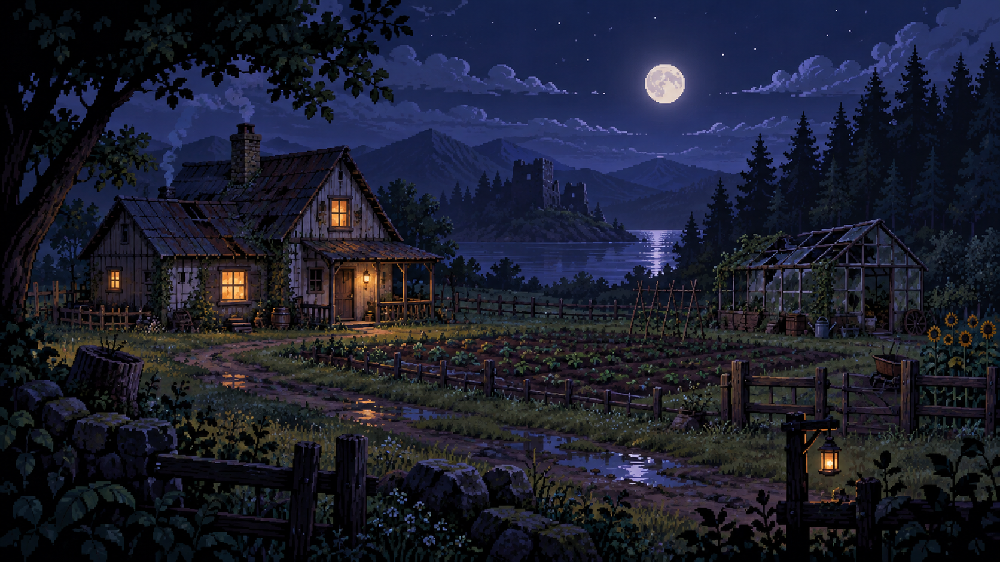

Moonlit map Select a place to decide how this evening feels.
A small story about showing up
Tonight’s thread: Restore the greenhouse before the last light fades, and notice who helps.
Saved locally
Moonlit map Select a place to decide how this evening feels.
A playable semantic-NPC story
Lastlight Farm has one broken greenhouse, a garden gone quiet, and a neighbor named Mira. You have seven evenings to decide what deserves your energy.
No account, network, or sign-in. Your save stays in this browser.
The seventh evening
Your week at Lastlight Farm settles into a shape you can carry home.
Your completed ending is saved. Restarting will ask before it clears this story.